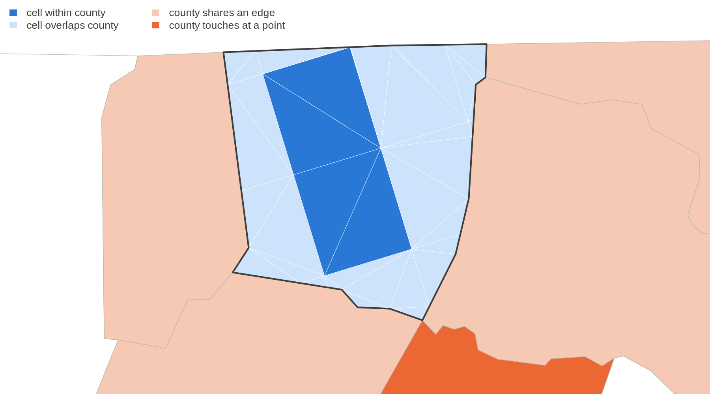
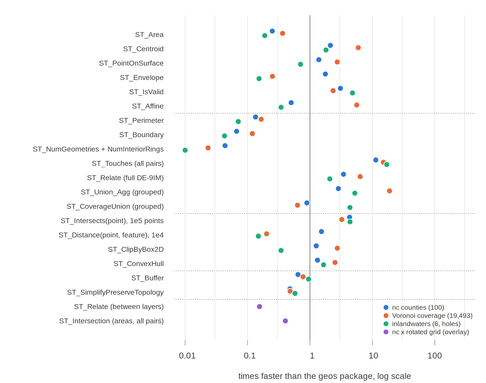

trianglewins / dev draft
ST_* on a mesh with wkpool and geos
Development draft, 15 November 2026. Follows ST_* functions on a triangle mesh. The companion plan is What geoarrow.triangles needs for ST_*.
The first draft checked ten mesh functions against sf. This one asks how far the suite goes with no sf in the path at all: the mesh from polymer (wkpool's vertex pool, cdtr's triangulation, the v0.2 labelling), point location from cdtr, the dissolve from wkpool, and the R geos package for everything a mesh cannot do and as the baseline every answer is checked against. Geometries on the geos side are held as GEOS objects, converted once, so the comparison is of algorithms, not of conversion.
It now covers 24 functions on three layers and one two-layer overlay. Every answer agrees with geos: to machine precision for measures, exactly for predicates, and with zero symmetric difference for unions. That includes the full DE-9IM matrix, computed from the triangle indices alone, on all 58,452 candidate pairs. The code is in survey/dev-drafts/st-mesh-geos/. Nothing here has been proposed upstream.
The short version:
- Relations are where the mesh wins, and they are all of DE-9IM. Touches is 11 to 17 times faster than geos, the full relate matrix 2 to 6 times, grouped union 3 to 19 times and point in polygon 3 to 4 times, all with answers identical to GEOS.
- Against GEOS objects already in memory, simple measures are a draw. Area, envelope and perimeter are cheap on polygons too, and GEOS caches envelopes. The large native wins in the first draft were mostly sf converting to GEOS on every call.
- Polygon structure is the mesh's weak spot. Counting parts and holes, or writing the boundary as lines, needs the dissolve; GEOS just reads its own structure. A stored ring table would fix it.
- Distance to far points and the fallbacks belong to GEOS. GEOS's indexed facet distance beats a grid over the boundary edges by 5 to 7 times on the larger layers, and buffer or simplify after a dissolve costs the dissolve on top of GEOS.
- The two steps named in the first draft are done:
cdt_locate()in cdtr (cdtr#9) and a compiledtri_dissolve()in wkpool (wkpool#15), both open for review.

The pieces
| piece | from | role |
|---|---|---|
| vertex pool, triangle pool, dissolve | wkpool | the mesh's storage; tri_dissolve() back to polygons
(now compiled) |
| triangulation, crossings, edge sources | cdtr | one constrained triangulation of all input edges |
| labelling (which features cover each triangle) | polymer | spec v0.2 Annex A; also the overlay of two layers |
| point location | cdtr | cdt_locate(): grid of triangle buckets, exact
orient2d |
| everything that builds new geometry | geos | buffer, simplify, distance index, and the baseline |
| kernels for this page | st_mesh.cpp |
DE-9IM, boundary, measures, clip by box, hull, distance grid |
The mesh as the functions read it is the triangle form of the mesh
spec: the vertex dictionary (x, y),
counter-clockwise corners (v0, v1,
v2), a membership of triangles in features stored as
offsets and ids (one per triangle for a coverage, several for
overlapping inputs), and an edge table of the triangle across each edge,
derived once when the mesh is read (one hash pass: 34 ms for the Voronoi
mesh, and not in the timings below, as a format could store it).
DE-9IM from the indices
Every point of the plane lies in exactly one open triangle, open edge or vertex of the mesh, or outside it. Each of those cells lies wholly in the interior, boundary or exterior of a feature:
- a triangle is interior if it is a member, else exterior;
- an edge is interior if the triangles on both sides are members, boundary if exactly one is (outside the mesh counts as a non-member), exterior if neither;
- a vertex is interior if every triangle around it is a member and it is not on the hull, exterior if none is, boundary otherwise.
The DE-9IM entry for (class in A, class in B) is the largest dimension of any cell in both classes: 2 for a triangle, 1 for an edge, 0 for a vertex, F for none. Exterior meets exterior outside the mesh, so EE is always 2. Only cells of A's and B's own triangles can be anything but exterior to both, so a pair costs the size of the two features, and the candidates are the pairs that share a vertex.
This is about 60 lines of C++. It reproduced
geos_relate() on every pair: 245 in nc, 57,797 in the
Voronoi coverage, 4 in inlandwaters, and 406 county by grid-cell pairs
in the overlay, where interiors overlap, cells lie within counties and
boundaries cross. Every named predicate (touches, overlaps, within,
covers, equals, crosses for polygons) is a pattern on this matrix, so
one function serves them all.
It is exact on the mesh, which is the input after noding. Where two inputs nearly meet, the mesh and GEOS can disagree because the mesh has decided the noding and GEOS decides it again per pair; none of these layers hit that case.
Results
| layer | features | polygon coordinates | mesh vertices | triangles | build (s) |
|---|---|---|---|---|---|
| nc counties | 100 | 2,529 | 1,255 | 2,205 | 0.03 |
| Voronoi coverage | 19,493 | 136,260 | 39,478 | 77,781 | 0.99 |
| inlandwaters (holes) | 6 | 33,644 | 30,835 | 33,205 | 0.57 |
| nc x rotated grid (overlay) | 100 + 160 | 3,329 | 1,752 | 3,396 | 0.04 |

Median milliseconds, mesh then geos, with the ratio:
| function | tier | nc | Voronoi | inlandwaters |
|---|---|---|---|---|
ST_Area |
native | 0.05, 0.01 (x0.2) | 2.4, 0.88 (x0.4) | 0.51, 0.10 (x0.2) |
ST_Centroid |
native | 0.06, 0.13 (x2.1) | 2.6, 15 (x5.9) | 0.52, 0.94 (x1.8) |
ST_PointOnSurface |
native | 0.05, 0.08 (x1.4) | 2.4, 6.6 (x2.7) | 0.51, 0.36 (x0.7) |
ST_Envelope |
native | 0.04, 0.07 (x1.8) | 4.2, 1.1 (x0.3) | 0.40, 0.06 (x0.2) |
ST_IsValid |
native | 0.17, 0.54 (x3.1) | 11, 25 (x2.3) | 2.1, 10 (x4.8) |
ST_Affine |
native | 0.19, 0.09 (x0.5) | 1.6, 8.8 (x5.6) | 1.4, 0.47 (x0.3) |
ST_Perimeter |
combinatorial | 0.09, 0.01 (x0.1) | 5.3, 0.87 (x0.2) | 1.4, 0.10 (x0.1) |
ST_Boundary |
combinatorial | 0.66, 0.04 (x0.1) | 38, 4.6 (x0.1) | 8.3, 0.35 (x0.0) |
ST_NumGeometries, ST_NumInteriorRings |
combinatorial | 1.9, 0.08 (x0.0) | 142, 3.3 (x0.0) | 26, 0.09 (x0.0) |
ST_Touches (all pairs) |
combinatorial | 2.3, 26 (x11) | 142, 2,128 (x15) | 13, 220 (x17) |
ST_Relate (full DE-9IM, all pairs) |
combinatorial | 2.9, 10.0 (x3.4) | 128, 817 (x6.4) | 13, 27 (x2.1) |
ST_Union_Agg (grouped) |
combinatorial | 3.0, 8.6 (x2.9) | 55, 1,032 (x19) | 29, 154 (x5.2) |
ST_CoverageUnion (grouped) |
combinatorial | 3.1, 2.7 (x0.9) | 52, 33 (x0.6) | 31, 134 (x4.4) |
ST_Intersects(point), 100,000 points |
near-native | 15, 66 (x4.3) | 44, 142 (x3.2) | 13, 56 (x4.4) |
ST_Distance(point, feature), 10,000 points |
near-native | 3.8, 5.8 (x1.5) | 22, 4.5 (x0.2) | 175, 26 (x0.1) |
ST_ClipByBox2D |
near-native | 0.16, 0.20 (x1.3) | 3.4, 9.5 (x2.7) | 2.8, 0.95 (x0.3) |
ST_ConvexHull |
near-native | 0.50, 0.66 (x1.3) | 8.9, 22 (x2.5) | 5.2, 8.5 (x1.6) |
ST_Buffer |
fallback | 12, 7.6 (x0.6) | 508, 393 (x0.8) | 1,854, 1,759 (x0.9) |
ST_SimplifyPreserveTopology |
fallback | 7.7, 3.7 (x0.5) | 284, 137 (x0.5) | 76, 44 (x0.6) |
ST_ConstrainedDelaunayTriangles |
producer | 26, 4.3 (x0.2) | 992, 104 (x0.1) | 572, 295 (x0.5) |
In the overlay of nc with a rotated 20 by 8 grid, the relate matrix
for all 406 county by cell pairs took 3.7 ms on the mesh against 6.5 ms
in geos, and the intersection area of every piece 1 ms against 16 ms for
geos_intersection(), with areas agreeing to 2e-13. Building
the overlay mesh took 38 ms, which is more than geos needs for either
question on its own; the mesh pays off when the same overlay answers
many questions.
What the numbers say:
- The relations tier is the case for the mesh. Touches, relate and grouped union read shared indices where GEOS intersects coordinates. The gap grows with the number of features (Voronoi) and with feature size (inlandwaters' 30,000-vertex polygons).
- GEOS's coverage union is mesh-shaped too. It matches shared edges instead of overlaying, and on the Voronoi coverage it beats the mesh dissolve (33 ms against 52 ms, of which the ring walk is 45 ms and writing WKB the rest; the walk's hash table is the obvious thing to replace with a sort). On inlandwaters, where coverage union still has to node long rings, the mesh is 4 times faster.
- Simple measures need no mesh. Area and envelope on GEOS objects in memory are a pass over coordinates that GEOS has already counted or cached, and the mesh has more vertex reads per feature (three per triangle). Centroid and point on surface favour the mesh, because GEOS does more work for them.
- Structure is expensive on a mesh. Number of parts, holes and boundary lines all go through the dissolve, which GEOS never needs. If a format stores the rings (or ring counts) next to the triangles, these become reads again; otherwise they stay 20 to 300 times slower.
- Point location is the clearest near-native win, 3 to 4 times faster than the best geos route (a tree join, or one prepared geometry per feature for small layers), with identical answers on 300,000 points.
- Distance is GEOS's. Inside points are free (0 from the locator), but the nearest boundary edge for far points is a nearest-neighbour search that GEOS's indexed facet distance does well. A mesh binding should hand the boundary edges to that index rather than write its own.
- Clip by box stays a mesh. Crossing triangles are clipped and fanned, with each cut point computed from its edge's endpoints in vertex-id order so the two triangles sharing an edge get bit-identical points and the result re-pools exactly. It is faster than GEOS where triangles are small (Voronoi) and slower where they are long (inlandwaters).
- The fallback costs one dissolve. Buffer through the mesh is 5 to 60 percent slower than the same call on the original polygons, and simplify, which is cheap, about twice as slow. That is the price of not keeping polygons beside the mesh. Simplify answers also differ in detail, because the dissolve chooses where each ring starts; all results are valid.
- Building the mesh costs more than GEOS's own
triangulation, 2 to 10 times, because polymer triangulates the
whole layer at once and labels it, where
geos_constrained_delaunay_triangles()works one polygon at a time and shares nothing. It is paid once, by the producer.
geos or sf
Asked along the way: how much is the geos package against sf? The
same five operations, three ways: sf on an sfc, geos
converting from that sfc on each call, and geos on
geometries already held:
| layer | function | sf | geos, converting | geos, held |
|---|---|---|---|---|
| nc | ST_Area |
0.36 | 0.20 | 0.02 |
| nc | ST_Touches (all pairs) |
11 | 26 | 25 |
| nc | ST_Intersects(point), 100,000 |
458 | 221 | 58 |
| nc | ST_Union_Agg (grouped) |
11 | 9.3 | 8.5 |
| nc | ST_Buffer |
11 | 8.0 | 7.7 |
| Voronoi | ST_Area |
34 | 24 | 1.5 |
| Voronoi | ST_Touches (all pairs) |
854 | 1,980 | 1,966 |
| Voronoi | ST_Intersects(point), 100,000 |
851 | 401 | 179 |
| Voronoi | ST_Union_Agg (grouped) |
932 | 1,016 | 989 |
| Voronoi | ST_Buffer |
1,104 | 409 | 431 |
| inlandwaters | ST_Area |
1.9 | 3.4 | 0.10 |
| inlandwaters | ST_Touches (all pairs) |
63 | 248 | 233 |
| inlandwaters | ST_Intersects(point), 100,000 |
371 | 1,616 | 1,589 |
| inlandwaters | ST_Union_Agg (grouped) |
129 | 148 | 147 |
| inlandwaters | ST_Buffer |
1,400 | 1,691 | 1,689 |
Milliseconds. Two things are mixed in sf's column: conversion to GEOS
on every call, which dominates cheap functions (area is about 20 times
faster with geometries held), and better predicate paths, because sf
prepares one side of st_touches() and
st_intersects() and links a newer GEOS (3.14 here, against
3.11 bundled in libgeos). So sf is 2 to 4 times faster than geos for
touches, and 4 times faster for point in polygon on large polygons,
unless the geos caller prepares by hand. Holding GEOS objects is the
right model for a mesh's fallback, since the mesh, not the polygons, is
what is kept; for the predicate baselines here, sf would narrow the
mesh's lead on touches to 4 to 6 times.
Two notes on the geos package, kept here and not raised anywhere:
geos_touches_matrix() crashed on polygons taken out of a
collection with geos_geometry_n() (a WKB round trip avoids
it; geos_touches() and the other matrix predicates were
fine), and the package has no coverage simplify or coverage validation,
which GEOS added in 3.12 to 3.14.
What changed in our packages
- cdtr:
cdt_locate()(cdtr#9). The grid of triangle buckets insidecdt_interpolate()became one flat structure shared by both, and the new function returns the containing triangle per point with CDT's robustorient2d; ties on shared edges go to the lowest triangle id. Point in polygon isfeature[cdt_locate(...)]. - wkpool: compiled
tri_dissolve()(wkpool#15). The ring walk moved to C++, step for step with the R version, which stays as a test reference; the two agree exactly on random groupings and on the polymer meshes here, and inlandwaters dissolves in 24 ms instead of 228 ms.
Next on our side
- Store or cache rings: either a ring table beside the triangles, or a dissolve cached per mesh, so structural accessors stop costing a dissolve.
- Move the DE-9IM kernel into wkpool (or polymer) as
tri_relate(), with the conformance corpus from the validity page. - Hand the boundary edges to a GEOS STRtree for distance, instead of the grid here.
- Try the same suite on a laridae exact mesh, where
vertex_identityis"exact"and the noding question in the DE-9IM section cannot arise.